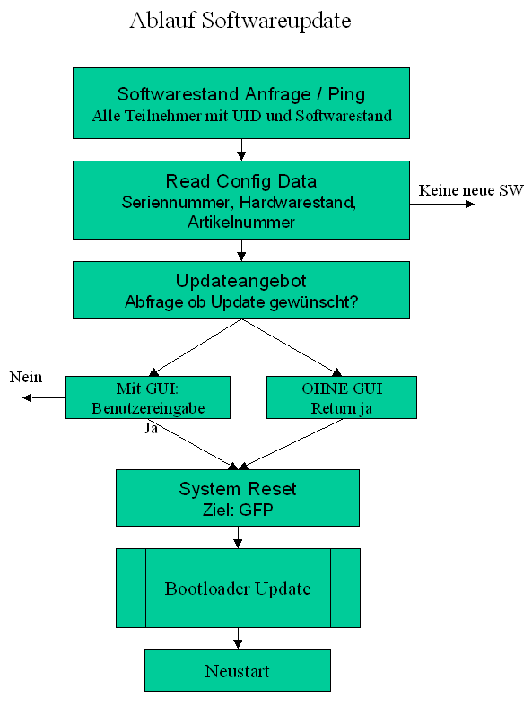

|
|||
| FRAMES NO FRAMES | |||
| Inhalt | |
|---|---|
| Ping | Abfrage CAN-Bus Teilnehmer |
| Updateangebot | Update mit
Benutzerinteaktion |
| Read Config Data | Lesen der
Configurationsdaten |
| Bootloader CAN | Systematik CAN
Bootloaderkommunikation |
| Bootloader Lok | Systemtik
Schienengebundener Bootloader |
| Statusdaten Konfiguration | Konfiguration der
Statusdaten abfragen |
Bildliche Darstellung des Ablaufs eines Updates:

Ein Update eines Gleis Format Prozessor (CAN gebundener Teilnehmer) funktioniert auf folgendem Weg:
Zuerst wird festgestellt, welche Geräte auf dem Bus vertreten sind. Mittels Ping melden sich alle CAN-Busteilnehmer. Antwort des Ping beinhaltet die UID, die Softwareversion Major und Minor sowie die Hardwarekennung.
Benutzeroberfläche kann nun feststellen welche Teilnehmer vorhanden sind. Mittels Get Konfig Data kann Graphical User Interface jeden einzelnen Teilnehmer detailliert abfragen. Somit sind die weiteren Daten der Teilnehmer bekannt. Hierzu gehören für den Updateprozess die Hardwarerevision und der Gerätetyp.
Sobald die Graphical User Interface feststellt, dass für einen Teilnehmer ein Update vorhanden ist, kann mittels Updateangebot nachgefragt werden, ob ein Update erwünscht ist. Geräte ohne Bedienoberfläche beantworten diese Frage immer mit "ja", alle anderen Fragen zuerst den Bediener.
Bei erwünschtem Update kann das Gerät mittels Resetkommando in den Bootloader versetzt werden. Der Update findet nun unter Kontrolle des Bootloaders statt. Nach erfolgtem Update wird das Gerät durch Anweisung an den Bootloader neu gestartet. Ein Update kann auch erzwungen werden, da das Versetzen in den Bootloader durch ein Resetkommando stattfindet und eine Nachfrage nur obligatorisch ist.
Unterschied zwischen CAN-Bus Teilnehmer und schienengebundene Decoder:
Update muss durch anderes
Kommando
angestoßen werden, da Ping kein Ergebnis liefert.
Decoder muss über das Programmiergleis erreichbar sein.
|
|||
| FRAMES NO FRAMES | |||